BoothHacks 2026 · 벤치마킹
Daydream 온보딩 벤치마킹: 가입 전 4화면, 나머지 질문은 홈 카드로
iPhone 화면 녹화 5분 2초 기준(Mens). 화면에 보인 것만 적었고, 개인정보는 가렸습니다. 카피는 원문 그대로입니다.
① 가입까지: 필수 4화면 + 코드
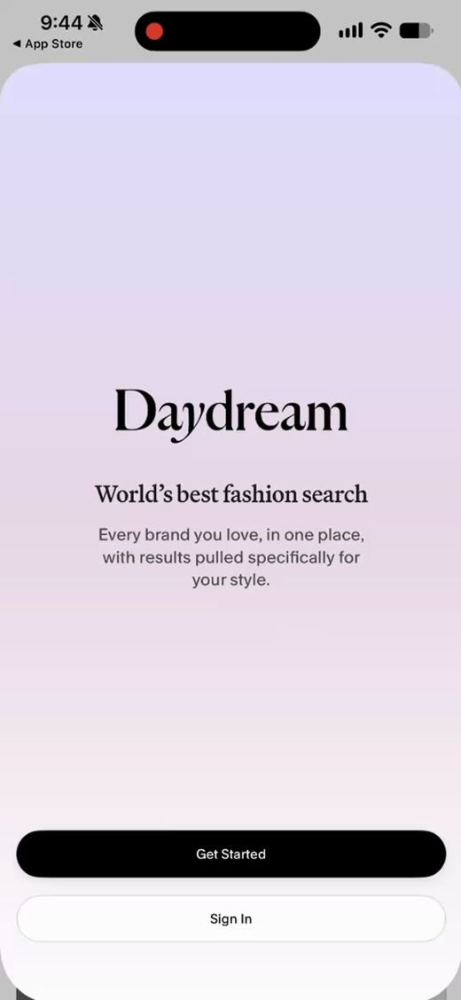
S01 웰컴
- 가치 제안 한 문장
- “World’s best fashion search”
- Get Started / Sign In
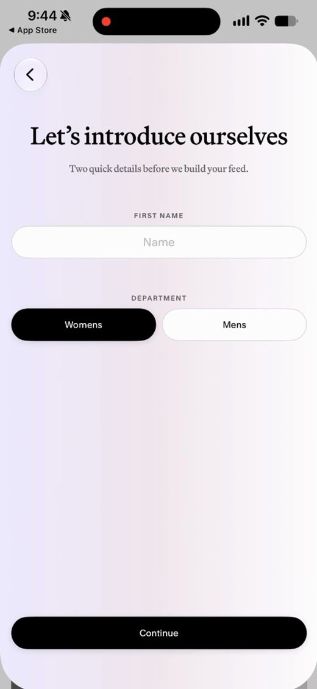
S02 이름 · 부문
- “Two quick details before we build your feed.”
- 이름, Womens / Mens
성별로 나누지 말고 페르소나로. non-binary도 포함하자는 의견. 데모는 Mens만 활성.
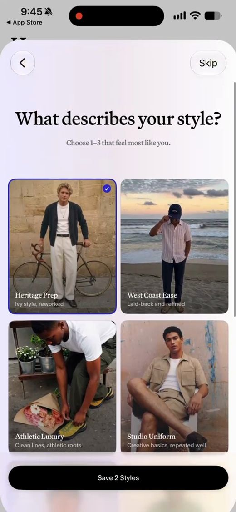
S03 스타일 유형
- 이름 붙은 룩 8개 중 1~3개
- CTA가 “Pick At Least One” → “Save 2 Styles”
- Skip 가능
사진만 보고는 남자가 고르기 어려움. 맞는 게 없어도 골라야 했음.
→ 둘 중 하나 고르기 8~10번, 결과는 Style Type 이름. 2장씩 보고 말로 답하는 보이스도 검토.
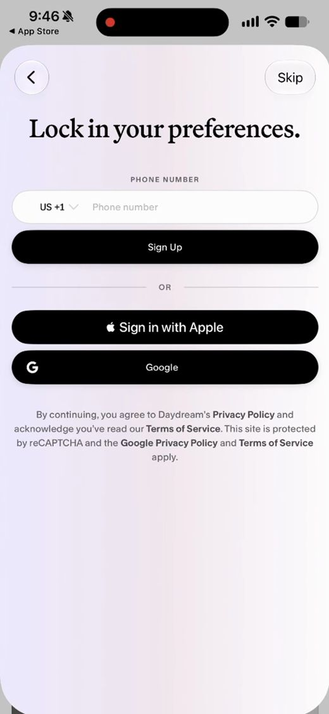
S04 가입
- 제목이 “Lock in your preferences.”
- 전화 / Apple / Google
- 취향을 고른 뒤에 요구
로그인은 와우 뒤로. 장바구니에 담을 때쯤 요구.
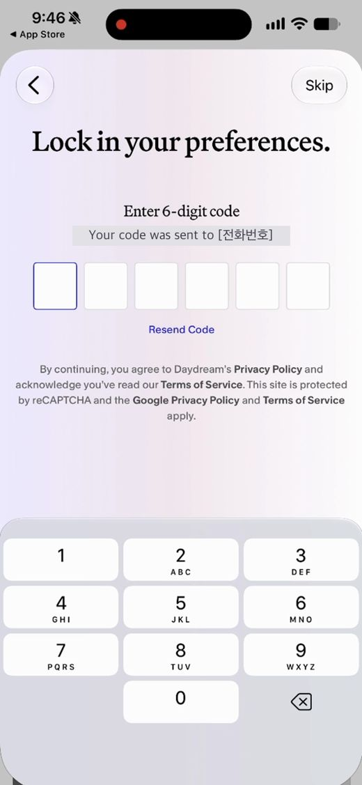
S05 인증 코드
- 6자리, Resend Code
- 같은 제목 유지
② 홈: 질문은 카드로 한 번에 하나 (모두 Skip 가능)
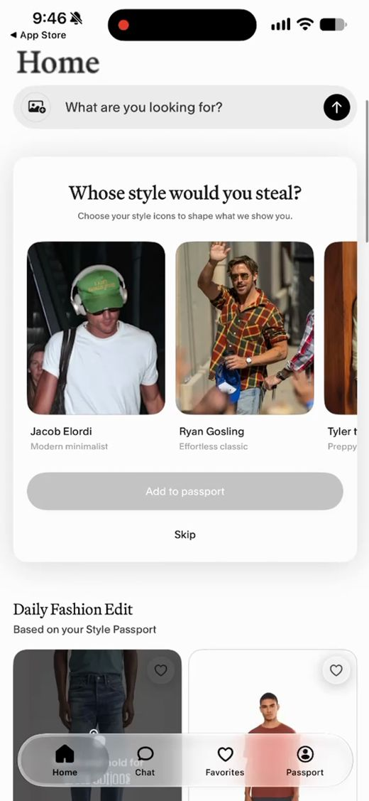
S06 카드 1 · 스타일 아이콘
- “Whose style would you steal?”
- 가로 스크롤, Add to passport
- 아래는 바로 상품 피드
연예인 사진은 나와 거리가 멂 → 일반 룩 사진.
용도(데이트·출근)는 온보딩이 아니라 이 입력창에서 받기.
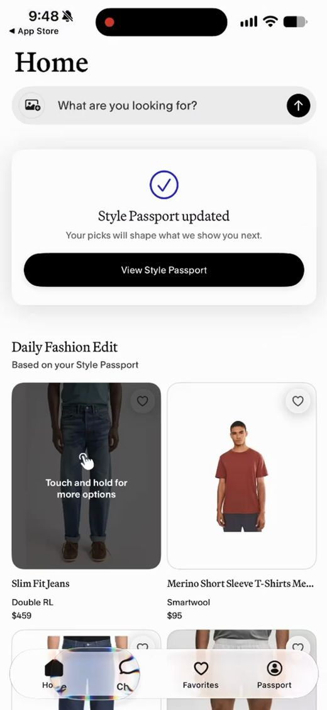
S07 저장 확인
- “Style Passport updated”
- 답이 어떻게 쓰이는지 한 줄
- 답할 때마다 반복
답할 때마다 프로필이 쌓이는 건 좋음. 말 안 한 것까지 갱신돼서 조금 소름.
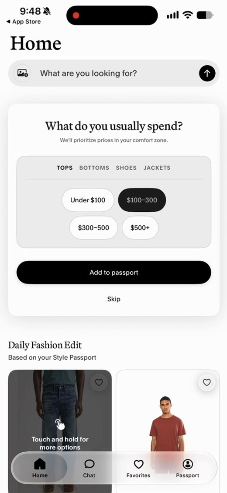
S11 카드 2 · 예산
- “What do you usually spend?”
- 카테고리 탭 + 가격 칩 4개
예산을 대화에서 추론해 저장하더라($200 이하). 직접 묻는 건 최소로.
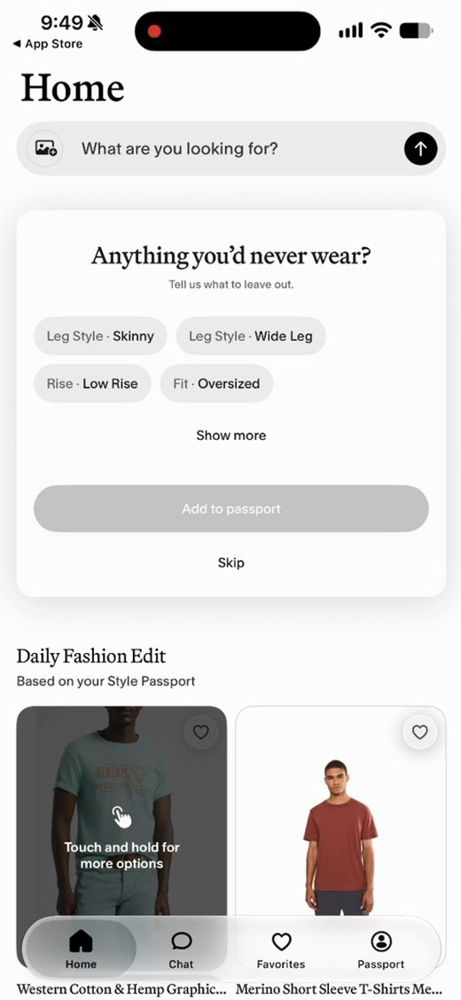
S12 카드 3 · 안 입는 것
- “Anything you’d never wear?”
- 속성 칩, Show more
‘never’ 제약은 가져가자. 취향이 바뀌면 어떻게 반영할지는 숙제.
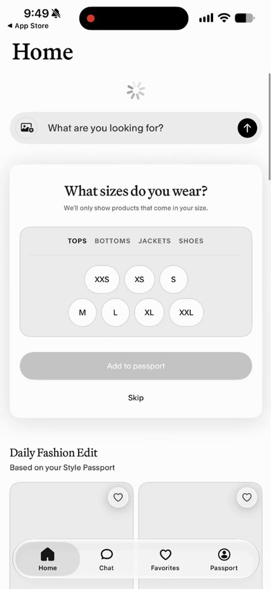
S13 카드 4 · 사이즈
- “What sizes do you wear?”
- 복수 선택
핏·사이즈는 후속. 상세 화면에서 ‘이 사이즈면 괜찮아’ 정도만.
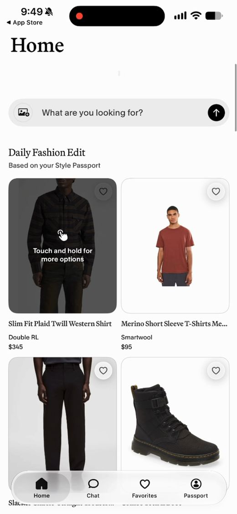
S14 개인화 피드
- “Daily Fashion Edit”
- 답할수록 첫 상품이 바뀜
추천이 너무 많고 다 비슷함 → 3개만.
비슷한 옷 찾기 말고 가진 옷의 짝 찾기(코트를 물었더니 재킷이 나옴).
순위에 광고 섞지 않기.
③ Style Passport와 알림 권한 (홈에서 View Style Passport)
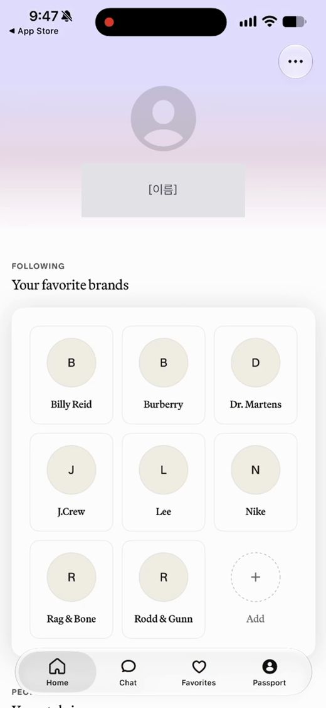
S08 Style Passport
- 모은 취향을 한 화면에
- 브랜드 8개는 자동으로 채워짐(기준 확인 필요)
한 화면 요약은 좋음. 구매하면 옷장에 자동 저장되는 닫힌 루프로.
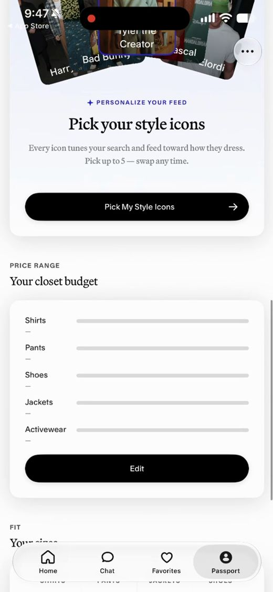
S08 아래쪽
- 스타일 아이콘 최대 5명
- 예산·사이즈는 빈 값을 —로 표시
스타일에 이름을 붙여 주는 게 핵심 → 우리는 4글자 Style Type.
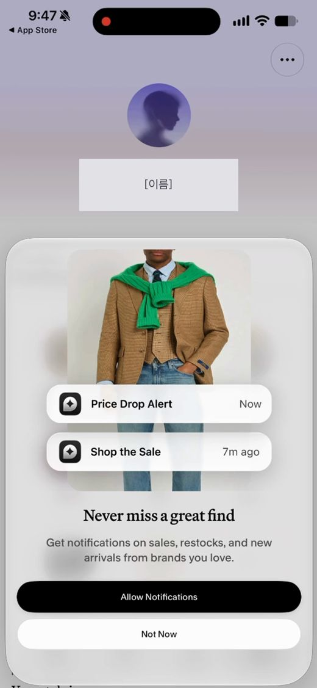
S09 알림 권한
- 패스포트 첫 진입 시
- 예시 알림을 먼저 보여 준 뒤 iOS 창
- “Never miss a great find”
알림은 데모에서 뺌.
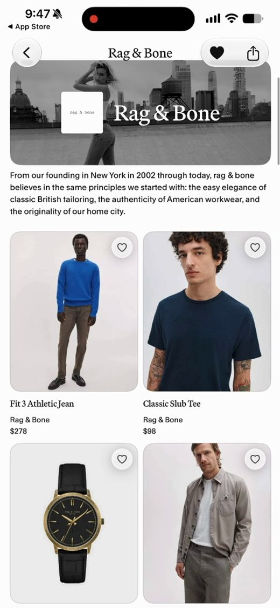
S10 브랜드 페이지
- 온보딩 밖 탐색
- 소개문 + 상품 그리드
쇼핑몰처럼 다닥다닥한 화면은 싫음. 옷만 크게 ↔ 이름·가격 보기 전환(Zara식).
우리 해커톤 버전 (제안, 팀 확정 전)
| 구분 | Daydream | 우리 버전 (제안) |
|---|---|---|
| 그대로 | 가입은 취향 선택 뒤 | 로그인은 결과를 본 뒤 |
| 그대로 | 사진 카드 + 이름 + 한 줄 설명 | Style Type 문항 카드 |
| 그대로 | 상태를 알려 주는 CTA | Pick one → See my Style Type |
| 그대로 | 저장 확인 + 효과 한 줄 | 유형 공개 화면에 쓰임새 한 줄 |
| 그대로 | Anything you’d never wear? | 짝 추천에 “이건 빼 줘” 칩 |
| 바꿈 | 8개 중 1~3개 고르기 | 카드 스와이프 12장 → 스타일 이름 (11/12) |
| 바꿈 | 유명인 스타일 아이콘 | 일반 룩 사진 (초상권 위험) |
| 바꿈 | 홈 = 상품 피드 | 홈 = 옷 사진 한 장 → 풀착장 3개 (11/12) |
| 바꿈 | Womens / Mens 토글 | 성별 안 물음, 카탈로그만 남성복 (11/12) |
| 뺌 | 전화번호 가입 + 인증 코드 | 데모에서 제외 |
| 뺌 | 알림 권한, 브랜드 팔로우 | 제외 |
| 뺌 | 사이즈 질문 | 다음 단계 슬라이드로 |
확인 필요 (녹화에서 안 보임)
- Sign In, 각 화면 Skip, Apple/Google의 이동 경로
- Womens를 고르면 스타일 카드가 달라지는지
- 다음 질문 카드가 나오는 조건 (스피너가 보임)
- favorite brands가 정해지는 기준
- 알림 권한에서 고른 값, Show more 뒤 항목
④ 11/12 회의: Pairly(Bonnie 빌드)에 반영할 변경
1 Welcome
- 서브카피를 스와이프 기준으로
- “men” → “people”
- 성별은 묻지 않음
2 Diagnosis
- 둘 중 하나 8번 → 카드 한 장씩 스와이프 12장
- 사진만, 키워드 라벨 없음
- 둘 다 싫어도 넘어갈 수 있음
3 Reveal
- 4글자 코드는 숨김 (내부용으로만)
- 스타일 이름 + 스케일 바 4개
- “You look great in …” 한 줄
- 태그, 대표 아이템
4 Upload
- “Which piece should we style?” 확인
- 선택 입력 1개: 장소나 분위기
- 음성 입력은 뺌
5 Results
- 아이템 3개 → 풀착장 3개 (내 옷 + 2개)
- One step up을 맨 앞, 추천으로
- Why it works 한 줄
- Shop 링크 클릭 수 기록
6 Social
- 글과 피드백에 스타일 레이블 배지
- 집계 한 줄: “Clean Minimal 12명 중 8명 Yes”
- 필터: 나와 비슷한 / 더 모험적인
7 Me
- My looks: 올리거나 저장한 착장 다시 보기
- 스케일 바와 태그
공통
- 페르소나는 Jun, 성별 없음
- 메인 기능 2개: 매칭, 소셜
- 수익: 제휴 링크, 유저는 무료
- 비슷한 상품 찾기는 나중
- Pairly Lovable